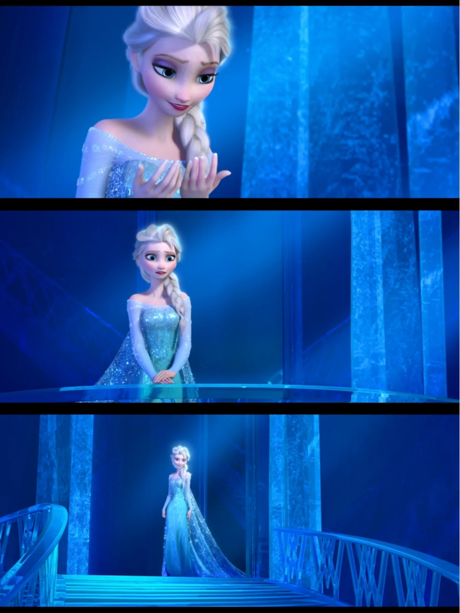
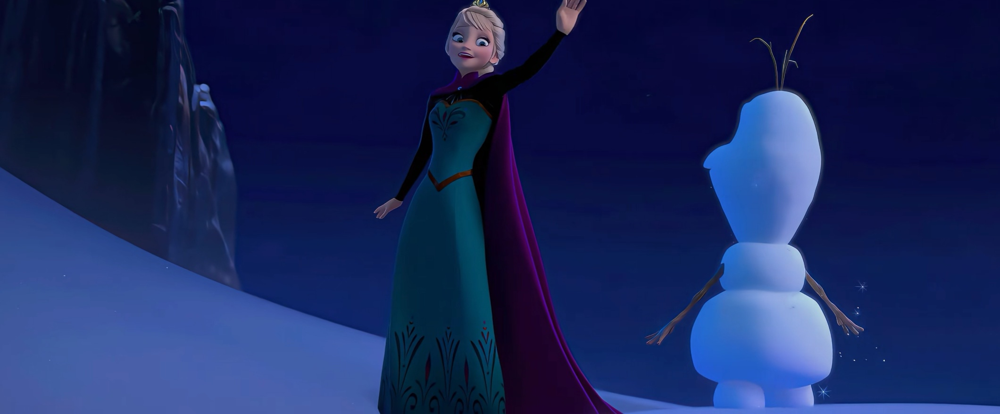
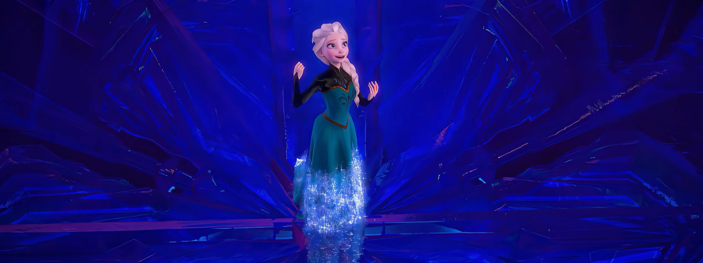

🎵 歌曲 · F1 歌曲
Let It Go
F1 歌曲
艾莎独唱 · Idina Menzel · 时长 3:45
📖 Let It Go
艾莎独唱 · Idina Menzel · 时长 3:45
一、歌曲基本信息
词曲作者
Kristen Anderson-Lopez & Robert Lopez
《Let It Go》是《冰雪奇缘 (Frozen, 2013)》中的经典歌曲，由Kristen Anderson-Lopez 与 Robert Lopez 创作。这首歌在电影中承担着重要的叙事功能，是角色情感表达和剧情推进的关键节点。（来源：迪士尼官方 / Frozen原声带）
二、完整歌词（中英对照 · 逐句交互 · 播放高亮）
🎵
Let It Go
Idina Menzel · Elsa
▶
VERSE 1 · 主歌一 · 艾莎
The snow glows white on the mountain tonight
今夜山上的雪泛着白光
💡 点击查看逐句考据
加冕礼魔法暴露后，艾莎仓皇逃入北山。今夜的雪山在月光下泛着白光，这是她第一次在无人之地独自面对自己的魔法。白雪既是她力量的产物，也象征着她终于可以不再隐藏的真实自我。
Not a footprint to be seen
看不见一个脚印
💡 点击查看逐句考据
北山上看不到任何脚印，这是一片从未有人涉足的净土。对艾莎来说，这意味着没有评判、没有恐惧、没有需要隐藏的秘密。她终于找到了一个可以做自己的地方。
A kingdom of isolation
一座孤立的王国
💡 点击查看逐句考据
孤立的王国，既指北山这片冰雪覆盖的无人之地，也暗指艾莎多年来内心的孤立状态。从小被隔离在房间里，她早已习惯了孤独，此刻她主动选择了这片孤立之地作为自己的新家。
And it looks like I'm the Queen
看起来我就是那女王
💡 点击查看逐句考据
看起来我就是这里的女王，艾莎在北山终于可以坦然接受自己的身份。在阿伦黛尔，她是需要隐藏魔法的女王；在这里，她是可以自由使用魔法的冰雪女王。这是她第一次真正感受到女王二字的重量。
The wind is howling like this swirling storm inside
风在呼啸，像我内心翻涌的风暴
💡 点击查看逐句考据
风在呼啸，像我内心翻涌的风暴，将自然现象与内心情感直接对应。艾莎多年压抑的情绪终于像风暴一样爆发出来，外界的风雪正是她内心状态的外化——她的情感越强烈，风雪就越猛烈。
Couldn't keep it in
再也无法将它隐藏
💡 点击查看逐句考据
再也无法将它隐藏，指艾莎再也无法压抑自己的魔法和真实情感。多年来她一直遵循 Conceal, don't feel 的训诫，但在加冕礼上魔法暴露后，她意识到再也无法隐藏——不是不能，而是不想。
PRE-CHORUS · 预副歌 · 艾莎
Heaven knows I tried
天知道我试过
💡 点击查看逐句考据
天知道我试过，表达艾莎多年来努力控制魔法、做个好女孩的艰辛。她并非没有努力，而是压抑本身就是一种痛苦。每一次努力控制，都是对真实自我的否定，这种痛苦只有她自己知道。
Don't let them in, don't let them see
别让他们进来，别让他们看见
💡 点击查看逐句考据
别让他们进来，别让他们看见，这是艾莎童年时父亲教她的口诀 Conceal, don't feel 的回响。但此刻她正在复述这些话，语气中已经开始带有质疑——她正在审视这些多年来束缚她的规训。
Be the good girl you always have to be
做个你必须一直做好的女孩
💡 点击查看逐句考据
做个你必须一直做好的女孩，讽刺地复述了多年来对她的期待。好女孩意味着隐藏、沉默、顺从，意味着不能有自己的情感和力量。此刻她正在质疑这种期待，为后面的决裂做铺垫。
Conceal, don't feel, don't let them know
隐藏，别感受，别让他们知道
💡 点击查看逐句考据
隐藏，别感受，别让他们知道，完整复述了父亲的口诀。这是全曲的转折点——下一句 Well, now they know 标志着她彻底与过去决裂。这句口诀曾经是她的生存法则，此刻却成了她要抛弃的枷锁。
CHORUS 1 · 副歌 · 艾莎
Well, now they know!
好吧，现在他们知道了！
💡 点击查看逐句考据
好吧，现在他们知道了！艾莎的魔法已经在加冕礼上暴露，整个阿伦黛尔都看到了她的怪物一面。既然秘密已经公开，她再也不需要隐藏——这是全曲情感的第一个爆发点，从压抑转向释放。
Let it go, let it go
随它吧，随它吧
💡 点击查看逐句考据
随它吧，随它吧（副歌第一番）。这是艾莎的第一次自我解放宣言——她站在冰宫将成的高墙上，任披风在狂风中飞舞。同样是“放下”，此刻是挣脱：抛开所有“藏好、忍住”的祖训，头一回任由魔法与真正的心意奔涌。
Can't hold it back anymore
再也无法回头
💡 点击查看逐句考据
再也无法回头，艾莎决定不再压抑自己，不再回到过去的生活。Can't hold it back 既指无法控制魔法的涌出，也指无法再压抑真实的自我。她已经站在了悬崖边，只能向前，不能后退。
Let it go, let it go
随它吧，随它吧
💡 点击查看逐句考据
随它吧，随它吧（第二番）。激情稍缓的复唱，她落回冰面、挥手再造出一片冰晶。如果说第一次是夺路，这一次是享受——她开始与力量做游戏，第一次尝到“做自己”甘甜。
Turn away and slam the door
转身把门关上
💡 点击查看逐句考据
转身把门关上，象征与过去的自己彻底决裂。她关上的不仅是城堡的门，更是多年来的恐惧、伪装和他人的期待。砰的一声关门声，是她与过去告别的仪式。
I don't care what they're going to say
我不在乎他们会说什么
💡 点击查看逐句考据
我不在乎他们会说什么，艾莎终于摆脱了他人的眼光。多年来她一直害怕别人的评价——害怕被称为怪物、害怕被排斥、害怕让家人失望。此刻在北山上，她终于可以不在乎，因为这里没有他们。
Let the storm rage on
让风暴肆虐吧
💡 点击查看逐句考据
让风暴肆虐下去吧（第一遍）。“风暴”终于从她避之唯恐不及的灾厄，逆转为她亲手指挥的雷霆——她是风暴本身。任它肆虐，因为她已不再惧怕自己生出的力量。
The cold never bothered me anyway
反正严寒从不能困扰我
💡 点击查看逐句考据
寒冷从来困扰不到我（第一遍）。她将最后的不甘一笔带过，推门而出走向山巅——这句轻描淡写，暗含她对自己“异于常人”的首次坦然。物理上的冷她不畏惧，此刻更看她终于不畏惧“独处”之冷。
VERSE 2 · 主歌二 · 艾莎
It's funny how some distance
有些距离真奇妙
💡 点击查看逐句考据
有趣的是，距离，艾莎发现远离阿伦黛尔后，反而能更清楚地看待自己和过去。距离让她从恐惧中解脱出来，让她意识到那些曾经让她害怕的事情，其实并没有那么可怕。
Makes everything seem small
让一切显得渺小
💡 点击查看逐句考据
让一切都变得渺小，远离过去的生活后，那些曾经让她恐惧的事情——别人的眼光、加冕礼的压力、做个好女孩的期待——都变得不再重要。距离给了她新的视角，让她看到了更广阔的世界。
And the fears that once controlled me
那些曾经控制我的恐惧
💡 点击查看逐句考据
那些曾经控制我的恐惧，指多年来对魔法暴露的恐惧、对伤害他人的恐惧、对被排斥的恐惧。这些恐惧曾经主宰了她的全部生活，让她不敢出门、不敢交朋友、不敢做真实的自己。
Can't get to me at all
再也无法触及我
💡 点击查看逐句考据
再也无法触及我，在北山上，艾莎终于摆脱了恐惧的控制。恐惧曾经像枷锁一样束缚着她，此刻她终于自由了——不是因为恐惧消失了，而是因为她不再让恐惧控制自己。
It's time to see what I can do
是时候看看我能做什么
💡 点击查看逐句考据
是时候看看我能做什么了，艾莎决定主动探索自己魔法的全部潜力。多年来她一直在压抑和控制，从未真正了解自己的力量能做到什么。此刻她终于可以放手去试，去创造，去发现自己的极限。
To test the limits and break through
测试极限，冲破束缚
💡 点击查看逐句考据
测试极限并突破，艾莎开始主动探索魔法的边界。她不再害怕魔法，而是将其视为一种创造力。突破不仅指突破魔法的极限，也指突破自我设限——那些她曾经认为自己做不到的事情。
CHORUS 2 · 副歌 · 艾莎
No right, no wrong, no rules for me
没有对错，没有规则
💡 点击查看逐句考据
没有对错，没有规则束缚我，在北山这片无人之地，艾莎终于可以摆脱社会规则的束缚。在阿伦黛尔，她必须做个好女王、好女儿、好姐姐；在这里，她只需要做自己。没有规则，没有评判，只有自由。
💡 点击查看逐句考据
我自由了，全曲情感的第一个高潮。艾莎终于获得了身体和精神上的双重自由——身体上远离了城堡和人群，精神上摆脱了恐惧和规则。这两个字虽然简短，却是她用一生的压抑换来的。
Let it go, let it go
随它吧，随它吧
💡 点击查看逐句考据
随它吧，随它吧（第三番）。声音愈亮，她踩着自己打造的冰梯向更高处走去。这一次的“随它吧”带着玩味与骄傲——她不再逃，而是亲手把这股力量驯成了自己。
I am one with the wind and sky
我与风天融为一体
💡 点击查看逐句考据
我与风与天空融为一体，艾莎感受到自己与自然的深刻连接。她的冰魔法源于自然，此刻她终于与自然和谐共处——风是她的伙伴，天空是她的舞台。这是她对自己身份的新认知：她不是怪物，而是自然的一部分。
Let it go, let it go
随它吧，随它吧
💡 点击查看逐句考据
随它吧，随它吧（第四番）。第二个副歌的起点，也是她彻底绽放的一刻。她抬手让冰宫殿宇层层拔起，那句随它吧成了缔造它、也在庆祝它的咒语——居高临下，众生皆寒。
You'll never see me cry
你永远不会看见我哭泣
💡 点击查看逐句考据
你再也不会看到我哭泣，艾莎展现出坚强的一面。多年来她一直在默默流泪——为孤独、为恐惧、为无法控制的魔法。此刻她决定不再哭泣，不是因为没有悲伤，而是因为她选择了坚强和独立。
BRIDGE · 桥段 · 艾莎
Here I stand and here I'll stay
我在这里站立，我在这里停留
💡 点击查看逐句考据
我就站在这里，就在这里留下——艾莎在冰宫之前定格，宣告一种主动的“停留”。这是她从一个“逃离者”蜕变为“定居者”的转折：她不再奔向别处，而是亲手营造并认领属于自己的国度。站定即立国，畏惧被这座冰雕的城堡隔绝在门外。
Let the storm rage on
让风暴肆虐吧
💡 点击查看逐句考据
让风暴肆虐下去吧（第二遍）。这是她站上冰宫之巅、威仪尽显的顶点，伴奏里的铜管与和声如暴雪铺开。与其说她在放任，不如说她在称王——这场风暴是她为自己加冕的背景。
My power flurries through the air into the ground
我的力量在风中飞旋，渗入大地
💡 点击查看逐句考据
我的力量在空中飞扬，渗入大地，描写艾莎建造冰雪城堡的具体场景。她的魔法从指尖流出，在空中形成雪花，然后渗入大地，变成坚固的冰结构。这是她创造力的具象化——从无形的力量到有形的建筑。
My soul is spiraling in frozen fractals all around
我的灵魂在四周冰裂花纹中旋转
💡 点击查看逐句考据
我的灵魂在周围的冰雪晶体中盘旋，frozen fractals（冰雪分形）是一个数学术语，用来形容冰雪晶体的几何结构。艾莎的灵魂与她创造的冰雪融为一体，她不再是魔法的使用者，而是魔法本身——她的灵魂就是这些美丽的冰雪晶体。
And one thought crystallizes like an icy blast
一个念头如冰雪般结晶
💡 点击查看逐句考据
一个念头像冰雪风暴一样结晶，艾莎的想法正在变成现实。她的创造力如此强大，以至于念头一出现就立刻变成了具体的冰雪建筑。crystallizes（结晶）既是物理过程（水变成冰），也是思维过程（想法变成现实）。
I'm never going back, the past is in the past
我绝不回头，过去已成过去
💡 点击查看逐句考据
我再也不会回去，过去已经过去了，艾莎与过去彻底决裂。她决定不再回到那个需要隐藏自己的阿伦黛尔，不再做那个好女孩。过去的一切——恐惧、伪装、孤独——都已经过去了，她要向前看，开始新生活。
FINALE · 终段副歌 · 艾莎
Let it go, let it go
随它吧，随它吧
💡 点击查看逐句考据
随它吧，随它吧（第五番）。激情回落一瞬又复扬，她端立在冰宫之顶，俯瞰曾让她胆怯的世界。这次的“随它吧”像盖棺的宣言：过去那个战栗的自己，已彻底留在山脚下的风雪里。
And I'll rise like the break of dawn
我将如黎明般升起
💡 点击查看逐句考据
我将像破晓的曙光一样升起，艾莎将自己比作黎明，象征着新生和希望。她的人生迎来了新的篇章——从黑暗的夜晚（压抑和恐惧）走向光明的早晨（自由和自我接受）。rise（升起）既指太阳升起，也指她作为冰雪女王的崛起。
Let it go, let it go
随它吧，随它吧
💡 点击查看逐句考据
随它吧，随它吧（最终番）。副歌收束，她尽情让这六个字在雪原上回荡。放下的不再是魔法，而是“当好臣民、取悦他人”的全部枷锁——这是全曲最重也最轻的一次释然。
That perfect girl is gone
那个完美的女孩已经远去
💡 点击查看逐句考据
那个完美的女孩已经不在了，艾莎彻底抛弃了完美女孩的面具。多年来她一直努力做别人期待的样子——完美、顺从、没有情感、没有力量。此刻她终于承认：那个完美女孩已经死了，取而代之的是真实的、有力量的、不完美的自己。
Here I stand in the light of day
我站在白昼之光中
💡 点击查看逐句考据
我站在白昼的光芒中，与开头的 tonight（夜晚）形成对比。艾莎从黑暗走向光明，从压抑走向释放。light of day 既指物理上的阳光，也指她内心的觉醒——她终于活在了真实的光芒中，不再躲藏在黑暗里。
Let the storm rage on
让风暴肆虐吧
💡 点击查看逐句考据
让风暴肆虐下去吧（最终遍）。一次比前面低回却更沉的复唱，落在全曲收梢。此刻风暴已成她王权的一部分，她从中走出，冷冷宣布“寒冷从未困扰过我”——她与被放逐的魔法终于和解。
The cold never bothered me anyway
反正严寒从不能困扰我
💡 点击查看逐句考据
寒冷从来困扰不到我（终遍）。在全曲末尾复诵，不再是辩白，而是走过万山、功成名就的确认。这句话因经历而被淬炼：她越过高墙、越过谩骂，深信世界再冷也冻不住她选择做自己的心。
三、关键歌词逐句考据
1
“The snow glows white on the mountain tonight”
今夜山上的雪泛着白光
加冕礼魔法暴露后，艾莎仓皇逃入北山。今夜的雪山在月光下泛着白光，这是她第一次在无人之地独自面对自己的魔法。白雪既是她力量的产物，也象征着她终于可以不再隐藏的真实自我。
2
“And it looks like I'm the Queen”
看起来我就是那女王
看起来我就是这里的女王，艾莎在北山终于可以坦然接受自己的身份。在阿伦黛尔，她是需要隐藏魔法的女王；在这里，她是可以自由使用魔法的冰雪女王。这是她第一次真正感受到女王二字的重量。
3
“Conceal, don't feel, don't let them know”
隐藏，别感受，别让他们知道
隐藏，别感受，别让他们知道，完整复述了父亲的口诀。这是全曲的转折点——下一句 Well, now they know 标志着她彻底与过去决裂。这句口诀曾经是她的生存法则，此刻却成了她要抛弃的枷锁。
4
“Well, now they know!”
好吧，现在他们知道了！
好吧，现在他们知道了！艾莎的魔法已经在加冕礼上暴露，整个阿伦黛尔都看到了她的怪物一面。既然秘密已经公开，她再也不需要隐藏——这是全曲情感的第一个爆发点，从压抑转向释放。
5
“Let it go, let it go”
随它吧，随它吧
随它吧，随它吧（副歌第一番）。这是艾莎的第一次自我解放宣言——她站在冰宫将成的高墙上，任披风在狂风中飞舞。同样是“放下”，此刻是挣脱：抛开所有“藏好、忍住”的祖训，头一回任由魔法与真正的心意奔涌。
6
“Turn away and slam the door”
转身把门关上
转身把门关上，象征与过去的自己彻底决裂。她关上的不仅是城堡的门，更是多年来的恐惧、伪装和他人的期待。砰的一声关门声，是她与过去告别的仪式。
我自由了，全曲情感的第一个高潮。艾莎终于获得了身体和精神上的双重自由——身体上远离了城堡和人群，精神上摆脱了恐惧和规则。这两个字虽然简短，却是她用一生的压抑换来的。
8
“The cold never bothered me anyway”
反正严寒从不能困扰我
寒冷从来困扰不到我（终遍）。在全曲末尾复诵，不再是辩白，而是走过万山、功成名就的确认。这句话因经历而被淬炼：她越过高墙、越过谩骂，深信世界再冷也冻不住她选择做自己的心。
四、歌曲定位与深度分析
🎯 歌曲定位
我歌（I Am Song） 时长与类型 全片枢纽
💡 内涵与主题
北山之巅 · 筑起冰宫 《Let It Go》高光一幕：艾莎甩开束缚，在雪峰上挥手筑起自己的冰宫，从此不再是那个小心翼翼藏起魔法的公主。

冰雪女王裙 · 经典侧写 冰蓝长裙与标志性侧影——这段华彩是艾莎从压抑到自由的视觉告示。

雪宝雏形 · 艾莎造雪宝 《Let It Go》蒙太奇中的名场面：艾莎挥手间捏出雪宝，是她“释放自我”后创造的第一个生命 | 来源：电影剧照
主题 歌词中 “Conceal, don't feel” 与 “Well, now they know!” 体现从压抑到坦然的转变；“The cold never bothered me anyway” 是艾莎与过去和解的宣言。 多元解读
🎬 在电影中的作用

魔法冰宫 一砖一瓦皆由她亲手呼出：这座水晶宫殿，正是她内心从囚禁到开阔的具象。
叙事枢纽 改写全片 情绪上承接安娜的寻姐之旅，将影片基调从宫廷喜剧推向史诗抒情。
🌱 来源与创作灵感
创作节点 早前反派版 灵感迸发 音乐致敬
🛠️ 制作过程
为 Idina Menzel 量身打造 转调趣闻 试镜渊源 录音细节
🔍 解析与评价
《娱乐周刊》称其为“liberation 的惊人颂歌”；《纽约每日新闻》赞为“献给女孩力量、放下恐惧与羞耻的激荡赞歌” [来源：EW / NY Daily News]。 亦有保留意见：电台节目 Sound Opinions 的乐评人称之为 “schlock”（俗套）[来源：Sound Opinions]。 结构亮点
🌍 文化影响与获奖
第 86 届奥斯卡金像奖最佳原创歌曲 获第 57 届格莱美奖“最佳影视歌曲”（Best Song Written for Visual Media，2015）；评论家选择奖最佳歌曲等；并 提名现象级传播 衍生
五、与安徒生《雪女王》原著的三处关键改写
（一）官方设定与创作方的公开表述 迪士尼官方对《冰雪奇缘》的定位始终是“loosely inspired by”（取材于、而非改编自）安徒生 1844 年的《雪女王》，并非直接改编。片名本身就是一次公开表态：联合制片 Peter Del Vecho 解释改用《Frozen》而非《The Snow Queen》的理由时说，这个片名“对我们来说代表了这部电影——它既在冰雪的层面，也在必须被解冻的那段冰封关系这一层”（来源：Wikipedia《Frozen (2013 film)》条目引制片方访谈）。
还有一个容易被忽略的细节：影片从头到尾没有任何一句台词说出“Snow Queen”这个称呼。艾莎在片中的自我称谓是“冰雪女王”，而《雪女王》作为安徒生笔下那个带走了凯的反派形象，在迪士尼的版本里被彻底拆解掉了——影片既没有魔镜，也没有需要被推翻的邪恶女王（来源：影片正典 · 官方设定集）。
官方艺术设定集把“真爱之举”（act of true love）确立为解开冰封之心的唯一机制。这个设定是全片最关键的原创发明之一，也是后文三处改写中偏离原著最远的一环。
（二）小说与原著：安徒生《雪女王》
安徒生的《雪女王》写于 1844 年，是童话体裁中罕见的 七章小说体，篇幅远长于他其余作品。原著的核心情节是：妖术师（有时译作小妖或魔鬼）制作了一面会歪曲现实的魔镜，碎片刺入少年 凯的 心与眼，凯因此变得残忍而不再认得青梅竹马的 杰尔达；雪女王随后诱走凯。杰尔达独自穿越四季之国寻找他，最终在雪女王的宫中找到半僵的凯—— 靠滚烫的泪水融化他心中的碎片
，再由凯自己的眼泪把眼中的碎片逼出（来源：Wikipedia《The Snow Queen》条目）。
原著里杰尔达与凯是 邻居家的孩子
，两人之间没有任何爱情线，全程是纯粹的童年友谊；杰尔达的旅程是独行的。迪士尼把这套结构做了三处根本性改写：
改写一 · 被咒者：凯 → 艾莎（男孩变女孩，“被魔镜刺心”变成“自我封闭”） 。原著中凯的心是被 外力（魔镜碎片）毒化的，杰尔达要做的是清除异物；而《冰雪奇缘》里艾莎的心是被 她自己 封锁的，没有碎片可以取出——安娜要解开的不是异物，而是艾莎给自己下的判决书。改写二 · 施救者：杰尔达 → 安娜（邻居变妹妹，独行变结伴） 。编剧 Jennifer Lee 明确指出，把原基于 Gerda 的主角改写成艾莎的妹妹，是让这个故事重新站得住的“突破点”——因为只有血缘才撑得起“十几年的隔绝”这种几乎不可和解的伤害。她们的感情底色也因此从原著的 童年友谊，变成了迪士尼反复强调的 姐妹之爱改写三 · 解救方式：泪水融化 → 以心换心的自我牺牲 。原著里杰尔达靠“滚烫的泪水”融解，那是亲情自然流出的力量，温暖而不流血；迪士尼把同一位置换成了安娜 用自己冻结的心去换
值得一并记下的是：影片 从未把原著当作需要还原的对象
。Jennifer Lee 谈及改编时说，安徒生原著“是一个相当黑暗的故事，很难直接搬进电影”，“我们的突破点在于试图赋予雪女王人性”（来源：Wikipedia《Frozen (2013 film)》条目引 Jennifer Lee 访谈）。
（三）官方发布与可靠网络资料
最能说明“改写到什么程度”的，是迪士尼自己废弃的早期版本。据公开资料，在 2011 年开发早期， 艾莎本来就是反派
：她会在第二幕绑架正在举办婚礼的安娜、试图冻结她的心，随后率领一支雪人军队压向城镇；整个第二幕的走向是“安娜想找到汉斯并吻他，艾莎出手阻止”。连雪宝（Olaf）在那个版本里也是艾莎的聒噪跟班，Jennifer Lee 对这个“刻薄版雪宝”的评价是直接否掉（来源：Wikipedia《Frozen (2013 film)》条目所引开发史资料）。
艺术指导 Michael Giaimo 回忆，John Lasseter 看过 Chris Buck 团队那一版后给出的评价是“很有趣、很轻松，但角色不立体，观众没办法真正产生连接”——剧本由此继续推翻重写，最终才让安娜从配角变为叙事中心（来源：同上，Wikipedia 条目引 Giaimo 访谈）。
至于“王子原来是反派的 scheming cad”这一点，《纽约时报》2013 年 11 月 26 日的评论《Disney's 'Frozen,' a Makeover of 'The Snow Queen'》把它与“不设恋爱线的女主角”并列为本片对童话公式的两处重大颠覆，并明确称影片“very loosely based”（非常松散地取材于）《雪女王》（来源：The New York Times, 2013-11-26）。
《Let It Go》之所以成立，不是因为它忠实于原著，而是因为它把原著里“被爱拯救的孩子”换成了“必须自己先放下的施咒者”。艾莎唱出的不是求救，而是判决——她不向任何人求救，她向自己下达释放令。这正是原作成不了的事：安徒生笔下没有人有资格说“Let it go ”，因为那不是解脱，那是遗忘。
把三条线索合起来看：《Let It Go》之所以是这首歌，而不是别的任何一首，恰恰因为它是“改写完成”的产物——它唱的是一个 自己给自己上了枷锁、又自己动手打开它
的人。原著里没有这个角色，只有一个等待被救的孩子。
📌 本页要点
本页核心要点：①🔊 完整歌词逐行可点，展开即见逐句考据；②🔍 三、关键歌词逐句考据挑出最关键的 8 句单列；③🎯💡🎬 四节分列歌曲定位、内涵与主题、影片作用、创作灵感、制作、评价与文化影响；④📖 五、与安徒生《雪女王》原著的三处关键改写。来源：电影正典、官方设定集、安徒生原著与公开访谈。